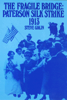

A full-length study of the creative collaboration between workers and activists in the 1913 Paterson silk strike
A full-length study of the creative collaboration between workers and activists in the 1913 Paterson silk strike


 A full-length study of the creative collaboration between workers and activists in the 1913 Paterson silk strike
A full-length study of the creative collaboration between workers and activists in the 1913 Paterson silk strike

|  |
The Fragile BridgePaterson Silk Strike, 1913Steve Golinpaper EAN: 978-1-56639-005-7 (ISBN: 1-56639-005-2) |
"The book ranks with the finest products of the new labor history.... A significant contribution to debates over the role of ethnicity, gender, and skill in American labor history, it also enhances our understanding of American intellectual life in the early twentieth century."
—Journal of Economic History
In this full-length study of the 1913 Paterson silk strike, Steve Golin examines the creative collaboration between the silk workers, organizers from the Industrial Workers of the World, and Greenwich Village intellectuals. Although the strike was defeated, this alliance could become a model for the American left because it suggests the possibilities of connecting economic, political, and cultural struggles.
Combining perspectives from labor history, social history, and intellectual history Golin argues that while the silk workers began the 1913 strike and controlled it themselves, the IWW helped them create institutions that supported the strike and reinforced its radically democratic character. The deadlock in Paterson dictated the need for a "bridge" to New York that was facilitated by a growing mutual trust between the Wobblies and intellectuals from Greenwich Village. At the height of the struggle, the IWW and the Village radicals joined the workers in presenting a powerful strike pageant in Madison Square Garden.
The story of the 1913 silk strike is important because it challenges long-held conservative assumptions about labor history, including the elitist role of skilled workers, the bureaucratic function of union organization, and the irrelevance of intellectuals. Although the strikers were ultimately defeated, the strike�s failure had more damaging consequences for the IWW and the intellectuals than for the workers themselves and Golin views this loss as a major turning point for the American left.
"Golin offers a major reinterpretation of the Paterson strike as a turning point in the history of American radical culture.... More than other labor historians, Golin approaches his subject from a cultural and intellectual perspective."
—The Journal of American History
"Golin has provided us with a pioneering work that demands a fundamental reinterpretation of the Paterson strike, one that finally accords the workers themselves the historical recognition that their extraordinary effort so richly deserves."
—Labor History
"Steve Golin presents an enthusiastic, politically engaged analysis of the strike. His beautifully written study demonstrates how a detailed narrative of a limited historical episode can throw a spotlight on broader issues in the history of American workers...a significant contribution to labor history."
—Union Labor News
"[Golin] makes his case with rich details that bring the whole dramatic series of events to life."
—Labour/Le Travail
"[Golin] has restored the 'fragile bridge' of the Paterson strike that fused at and class consciousness, and he has constructed new bridges between the scholarly domains of social and cultural history and between the 'moment' of 1913, so filled with revolutionary promise, and our own time."
—International Review of Social History
"An excellent book.... Golin's exciting, moving, informative book reminds us that social history is something not only to be written and read, but to be made."
—Zeta Magazine
Acknowledgments
Introduction: The Moment of 1913
1. Bimson's Mistake
2. The Strike as a Way of Life
3. Deadlock
4. The Bridge: New York
5. The Bridge: Paterson
6. The Paterson Pageant
7. Defeat
8. Defeat Becomes Disaster
Conclusion: View from the Bridge
Notes
Index
Steve Golin is Professor of History at Bloomfield College in New Jersey.
American Studies
Labor Studies and Work
© 2015 Temple University. All Rights Reserved. This page: http://www.temple.edu/tempress/titles/551_reg.html.